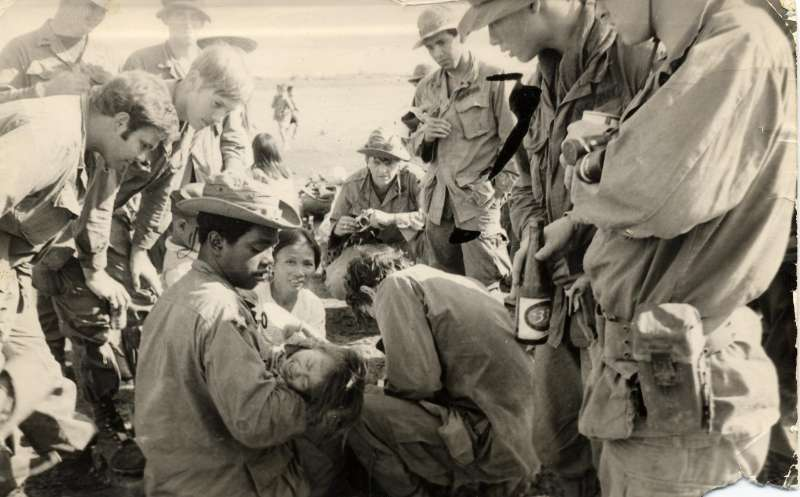

BACK
1971-1972
Contributed by Robin Woo

Xuan Loc, Vietnam. 1971
Members of Skull Platoon, D Company, 2/8th Cav,
1st Cavalry (airmobile)
Charlie Williams, Jr. holding baby girl whose foot is injured. Medic Tony
("Doc") Diaz treats baby's foot while we watch.
Robin Woo (2nd from right). Dan Beese (center kneeling with camera in hand),
Marc Zamora (3rd from right), Lt. Mc Connaughhay (upper left)
BACK